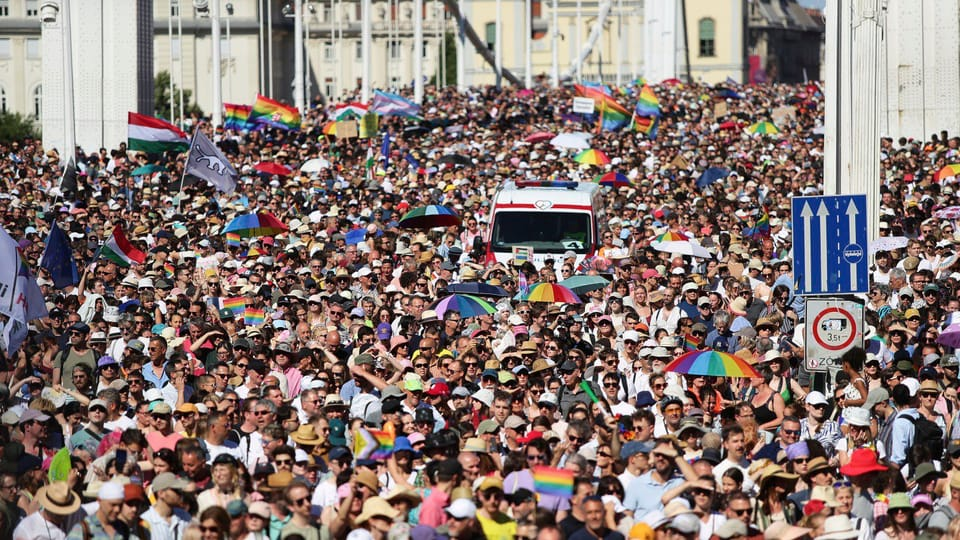

世界苦茶06月29日新闻 | 37条 | 中国建立一座战略支援部队的军校

中国建立一座战略支援部队的军校 | 特朗普将率CEO访华 | 中国在洪灾时拓宽补偿范围 | 泰国爆发针对政府的抗议游行 | 普京释放2026年起削减军费的信号
今日三条新闻分析
苦茶数据
美元兑人民币：7.16（昨日7.17，前日7.17）
美元兑日元：144.88（昨日144.54，前日145.36）
上证指数：休市（昨日3424，前日3453）
标普500指数：休市（昨日6173，前日6181）
比特币：108062（昨日107431，前日107298）
布伦特原油：67.77（昨日67.57，前日67.94）
中国新闻
• 东北高校生酷热睡楼道 ：中国东北地区持续高温，当地多所高校宿舍未安装空调导致学生太热无法入睡，不少人选择睡楼道、操场甚至卫生间水池来避暑。综合红星新闻和极目新闻报道，东北多所高校学生吐槽当地高温的视频，连日来引发中国网络热议。视频中，不少学生通过在楼道乘凉、打地铺、在室外搭帐篷等方式避暑，吉林农业大学甚至有多名学生睡到卫生间水池中。一名吉林动画学院学生受访时说，学校宿舍没有安装空调和风扇，“往年再热也可以睡着，今年温度太高。”据其介绍，该校学生宿舍一般在晚上10时30分断电，学生通常会自备小风扇，并使用充电宝给风扇充电。
• 中国新军校正式成立 ：中国一所新组建的军校在星期六式成立，并将面向社会招收普通高中毕业生。中国国防部今年5月宣布，中共中央军委决定调整组建中国人民解放军陆军兵种大学、中国人民解放军信息支援部队工程大学，以及中国人民解放军联勤保障部队工程大学三所军校，均为高等教育院校，面向社会招收普通高中毕业生。据《湖北日报》报道，信息支援部队工程大学成立大会星期六在湖北武汉举行，军地有关领导和大学全体官兵参加。湖北省委书记、省人大常委会主任王忠林出席大会并致辞，同时与部队领导共同为学校揭牌。
• 陈茂波反驳看衰香港言论 ：香港财政司司长陈茂波说，不同时期都有人看淡香港并发表负面言论，但历史证明他们必“跌碎眼镜”。综合香港电台和《大公报》报道，陈茂波在接受多家香港媒体专访时发表上述看法，并称随着香港的国际金融中心地位越来越高、竞争力越来越强，想“搞香港”的人要付出代价。陈茂波也说，虽然中美贸易谈判取得进展，但美国总统特朗普作风多变，预计香港将持续面对金融及经济风险。不过他认为，只要建立强大缓冲机制，便可增强应对外来风浪的承受力。
• 陆委会称和平靠自身准备 ：台湾政府的大陆委员会主委邱垂正谈及两岸局势时说，台湾坚持和平，但和平不能一厢情愿建立在中国大陆领导人的善意上，而是要靠自己的实力和准备。陆委会官网发布新闻稿称，邱垂正与副主委沈有忠星期五出席东海大学“两岸关系与民主韧性营队”活动，与学员们就国际及两岸议题进行交流互动。邱垂正在专题演讲中指出，冠病疫情后，两岸情势发生转变，解放军扰台成为常态，北京还发布22条惩治台独意见，对台全面极限施压、步步进逼。
• 特朗普将率CEO访华 ：日本媒体报道称，美国总统特朗普将效仿上月的中东行，与美国企业首席执行官一起在今年较迟时候访问中国。据日本经济新闻星期六报道，美国官方正安排特朗普在今年稍迟与数十名美企CEO一起访华。这将与特朗普5月访问中东的安排雷同，当时30多名美国商业领袖随特朗普出访沙特阿拉伯，达成总额超2万亿美元的协议。
• 中公布蓄洪补偿新办法 ：随着极端降雨日益频繁，中国扩大对因防汛调度受影响人群的社会保障范围，包括由中央财政直接提供补偿，以及将牲畜损失纳入赔付等新措施。中国国务院星期五公布《蓄滞洪区运用补偿办法》（以下简称《办法》），旨在保障蓄滞洪区的正常运用，确保受洪水威胁的重点地区的防洪安全，并合理补偿蓄滞洪区内居民因蓄滞洪遭受的损失。蓄滞洪区是通过将洪水引入河道两侧低洼区域，缓解下游洪灾压力的重要调度手段。路透社报道称，随着极端天气日益频繁，一些原本多年未启用、甚至已转变为农田、养殖区或居民区的蓄洪区重新启用，引发社会矛盾。
• 赞比亚击毙抢劫中企歹徒 ：中国驻赞比亚大使馆通报，当地警方侦破今年3月一家中资企业遇劫案，八名歹徒被击毙。中国驻赞比亚大使馆星期五在官方微信公众号上，通报上述消息。根据通报，赞比亚铜带省警察厅日前向中使馆通报，近期警方在侦查一起案件时抓获涉“3·20”中资企业遭抢劫致中国公民伤亡案的八名歹徒。在警方押送上述人员起获其埋藏枪支时，歹徒企图夺枪袭警，被警察全部当场击毙。
• 东航原董事长正接受调查 ：东航原党组书记、董事长刘绍勇涉嫌严重违纪违法，现正接受中纪委审查调查。刘绍勇1958年生， 2008年任东方航空集团总经理，2016年至2022年7月任东方航空董事长。中国民航局未如期在MU5735航班“3·21”空难三周年之际通报调查进展情况。网传其函复信息公开申请人，指有关信息属《政府信息公开条例》第14条“危及国家安全、社会稳定”范围，不予公开。
亚太印太新闻
• 泰国首相或留任内阁 ：面临弹劾危机的泰国首相佩通坦已将新的内阁名单呈报泰王。消息人士说，佩通坦计划在新内阁中兼任文化部长。这么一来，如果法院下令她暂停首相职务，她仍能留守内阁。泰媒报道，佩通坦星期五已提交内阁改组名单，目前等待泰王御准。《民族报》引述多名消息人士说，佩通坦兼任文化部长，是效仿前首相巴育的应急措施。巴育2022年曾遭宪法法院下令暂停首相职务。期间，时任副首相巴维暂代首相职，巴育则继续担任国防部长。佩通坦也可能面临相同局面。宪法法院下周将审议是否接受弹劾她的请愿书，若受理，法院可能下令她在审理期间暂停首相职务。
• 女游客被指口音遭围攻 ：台湾大罢免潮下猎巫事件频发，有五月天女粉丝在拍摄台北自强隧道时，被民进党支持者指其“中国口音”并拍照网络公审。台北市长蒋万安称，台湾“骄傲的人情味”走味，强调不能为了政治而牺牲人性。综合壹苹新闻网、东森新闻和《联合报》报道，有绿营支持者在社交平台Threads发文称，在自强隧道看到一名女子拿手机拍摄，他追上对方询问得知是“来自港澳的女游客”，但他认为对方“一听就是中国的口音”，因此要求女子把照片删除。据报道，这名挺绿男网民甚至还检查女游客手机内照片，逼迫对方把所有相关影像都删除，事后还将女游客的清晰长相照片和视频发布到社媒进行网络公审。
• 赖清德称民众护台有感 ：台湾总统赖清德在民进党全代会上说，台湾民众“有感国家安危”，珍贵力量再度出现，不但有青鸟飞出，民众也自主发起大罢免，民进党必须与民众同行，一起承担守护台湾的责任。综合TVBS新闻云网和ETtoday新闻云报道，民进党全代会星期六在台北国际会议中心举行，以“更好的民主、更好的台湾”为主轴。赖清德在会上致词时说，当世界各国都在警戒中国大陆强权扩张时，台湾政府提出的国防预算与国安法制，却被在野党阻挡杯葛。在此情况下，台湾民众“有感国家安危”，珍贵力量再度出现，不但有青鸟飞出，民众也自主发起大罢免，民进党必须与民众同行，一起承担守护台湾的责任。
• 赵少康批赖清德施政失败 ：台湾资深媒体人赵少康在社交平台发文称，台湾前总统蔡英文连续两年民进党全代会，形同对总统赖清德投下不同意票。赵少康星期六在脸书发文称，赖清德上任13个半月，没有完成一件好事，不是跟立法院对抗，搞什么复议、释宪，就是发动大罢免。他称，对赖清德来说，台湾人民不是其余人口，就是杂质。赵少康也批评，赖清德放着关税、台币升值、诈骗、缺工、少子化、青少年自戕上升、护理师不足、两岸紧张于不顾，一面撕裂台湾，一面高唱团结，真是活在平行时空。
• 谢长廷否认与党立场不同 ：曾指全台掀起的罢免潮是“恶的循环”的民进党籍台湾总统府资政谢长廷星期六说，他对大罢免的立场与党没有不同，请大家不要在同中求异。今年3月，谢长廷发表新书《善的循环再续》，并在新书发布会上说，他认为全台掀起罢免潮是不幸事件，“什么都通不过，什么事都没办法做，就发动罢免，这是恶的循环”。综合台湾《联合报》和中时新闻网报道，谢长廷星期六出席民进党全代会会前受访，被问及对于罢免的立场是否与党不同一事时回应称，没有不同。
• 首尔禁Temu儿童商品销售 ：韩国首尔市政府以安全为由，要求Temu和全球速卖通等中国跨境电商平台停售部分儿童产品。据法新社报道，中国跨境电商巨企希音、Temu和全球速卖通近年在全球零售市场掀起热潮，吸引大批消费者购买他们出售的新潮且成本超低的服装和饰品，使其成为美国电商巨头亚马逊主要竞争对手。上述中国电商的快速蹿红，引发外界日益关注他们的商业操守和商品安全，包括韩国市场在内。
• 曼谷爆发大规模反政府游行 ：数以百计的泰国示威者星期六聚集在首都曼谷，要求首相佩通坦辞职。泰国政府因泰柬边境争端持续升温，社会的愤怒情绪也日益高涨。路透社报道，示威者在繁忙路口的胜利纪念碑旁挥舞旗帜，参加由“土地联合力量”组织的示威活动。此次集会是为泰党2023年执政以来面对的最大规模反政府活动，也给38岁的佩通坦带来更大的压力。正在努力重振低迷经济和维持脆弱的政府联盟的佩通坦，下个月还可能面对不信任投票。
• 巴基斯坦暴雨致32人亡 ：自本周季风季节开始，巴基斯坦国内暴雨和山洪暴发已造成至少32人死亡，其中包括16名儿童。开伯尔-普什图省的灾害管理局星期六发声明说，过去36小时内山洪暴发和屋顶倒塌已造成19人死亡，其中八名为儿童。在所有遇难者中，有13人来自西北部的斯瓦特山谷。当局说，开伯尔-普什图省的洪水造成56间房屋受损，其中六间被毁。
• 巴军遭袭13死伤者众多 ：巴基斯坦安全部队6月28日在西北部开伯尔-普什图省北瓦济里斯坦地区一市场执行拆弹任务时，一伙武装分子使用自杀式汽车炸弹撞向安全部队车辆，随后使用枪械向安全部队和人群扫射，造成至少13名军人死亡，10名军人和19名平民受伤，部分伤者情况危急。目前，增援的巴安全部队已封锁现场，并在该地区展开搜捕清剿行动。这名官员并未透露实施袭击的武装分子死伤数量。恐怖组织“巴基斯坦塔利班”的一个下属分支组织宣称制造了此次袭击。
科技新闻
• 英特尔首席战略官将离职 ：据两位知情人士透露，英特尔公司首席战略官萨夫罗杜·叶博阿-阿曼夸即将离职。这是自陈立武今年三月执掌这家芯片制造商以来的最新人事变动。英特尔证实了这一离职消息，并表示：“我们感谢萨夫为英特尔做出的贡献，并祝他一切顺利。” 叶博阿-阿曼夸自2020年起担任英特尔首席战略官，他将于本月30日离职。他在任期间负责英特尔的增长计划、战略合作伙伴关系和股权投资等多项事务。 叶博阿-阿曼夸的部分战略职能将转交给萨钦·卡蒂 ——英特尔近期刚提拔他为首席技术与人工智能官。此外，英特尔旗下风险投资部门英特尔资本将直接向陈立武汇报。
• 脸书AI功能引隐私担忧 ：脸书正向用户请求访问手机相册权限，以便调用AI来优化用户上传的图片内容。用户在社交应用中创建新Story后，会出现一个屏幕提示，询问用户是否选择加入 “云处理” ，以获得创意建议。用户点击 “允许” 后，脸书应用以相册中的图片为基础，生成拼贴画、回顾、AI风格转换或者照片主题等创意。脸书表示，为了实现这项功能，该服务将根据时间、地点或主题等信息，不断将用户的媒体文件上传到云端。只有用户自己能看到这些建议，媒体文件不会用于广告定位。但点击“允许”，用户就同意了Meta的AI条款。这允许人工智能分析用户媒体文件和面部特征。
• 谷歌的碳排放量再次上升： 随着谷歌在人工智能领域的持续推进，其碳排放量再次大幅上升。该公司2025年可持续发展报告强调，其“基于目标的排放量”去年增长了11%，达到1150万吨二氧化碳污染，较2019年增长了51%。这使得谷歌距离其到2030年将全球变暖污染减半的目标更加遥远。而计入“非可控因素”的谷歌实际总排放量已达到1518万吨二氧化碳。这大致相当于近40座燃气发电厂一年的排放量。 谷歌的报告还强调，尽管由于人工智能的推动，其能源消耗量持续上升，但其数据中心的碳排放量减少了12%。尽管有所下降，但与2019年相比，数据中心的碳排放量仍然高得多。
• 千余名作家联名呼吁出版商限制使用AI： 劳伦·格罗夫、莱夫·格罗斯曼、RF 匡、丹尼斯·勒翰和杰弗里·马奎尔等作家联合发表了一封公开信，呼吁图书出版商承诺限制使用人工智能工具，例如承诺只雇佣人类为有声读物配音。公开信指出，作家们的创作成果被人工智能公司“窃取”了。信中提到：“这些公司没有将作品所创造的收益按一定比例支付给作家，而是将本应属于作家的报酬支付给基于作家们无偿劳动所构建的技术。”除了要求出版商仅使用人类配音外，作家还们呼吁出版商做出承诺，永不发行由机器生成的书籍，并且不以AI工具取代人类员工，或者将人类员工的岗位降级为人工智能监控员。 （翻評：這個基本是不可能的。）
财经新闻
• 英汽车产量创历史新低 ：英国汽车制造商与贸易商协会公布的数据显示，5月英国汽车总产量同比大幅下降32.8%至4万9810辆，创下自1949年以来除2020年疫情年份外的同期最低水平。新华社引述星期五公布的数据说，5月英国乘用车产量为4万7723辆，同比下降31.5%；商用车产量仅为2087辆，同比暴跌53.6%。英国汽车总产量已经连续五个月下滑。今年前五个月，英国汽车总产量累计约为34.82万辆，同比下降12.9%，为1953年以来同期最低水平。
俄乌战争
• 普京拟2026年起减军费 ：俄罗斯总统普京星期五出人意料地宣布，俄罗斯计划从2026年开始削减军费开支，与北约未来10年增加国防开支的计划形成鲜明对比。综合彭博社和路透社报道，普京星期五在白罗斯明斯克的一场新闻发布会上做此宣布时承认预算压力日益增大。不过他也说，削减国防开支取决于俄罗斯能否赢得乌克兰战争。普京说，俄罗斯今年的国防开支占国内生产总值的6.3%，这“相当高”。他说：“这是我们必须解决的问题之一，包括预算问题。”
• 德國的梅爾茨拒絕與普丁對話，指其會在會談後升高攻擊行動： 梅爾茨提到，2024年7月匈牙利總理歐爾班曾前往會見普丁，前德國總理蕭茲也與俄國領導人通了電話。「匈牙利總理最近訪問莫斯科時，俄羅斯對基輔及一家醫院發動了猛烈攻擊。在我前任與普丁通話後，便發生了對一間兒童醫院的襲擊。如果這就是這類通話的後果，那我會長時間避免這種接觸。」
• 教宗雷奧稱烏克蘭在俄羅斯「荒謬戰爭」中「殉道」： 2025年6月28日，教宗雷奧十四世在梵蒂岡接見烏克蘭希臘禮天主教朝聖者時表示，烏克蘭正在被俄羅斯「荒謬的戰爭」所「殉道」。希臘禮天主教是烏克蘭第二大基督教派，信徒約佔全國人口的十分之一，主要集中在烏克蘭西部，在接受教宗管轄的同時保留了許多東正教的儀式與傳統。教宗在聖伯多祿大殿對信徒表示：「我願意向殉道的烏克蘭表達我的關懷——向兒童、青年、長者，尤其是那些痛失親人的家庭。」他還說：「我與你們一同哀悼戰俘和這場荒謬戰爭的受害者。」
国际新闻
• 以色列击毙哈马斯高官 ：以色列称在加沙空袭中，击毙哈马斯军事部门高级成员哈卡姆·伊萨。新华社报道，以色列国防军和以色列国家安全总局星期六发表联合声明说，以军在星期五晚上对加沙地带北部加沙城的一次空袭中，击毙哈卡姆·伊萨。声明说，伊萨是哈马斯军事组织创始人之一、哈马斯军事委员会委员，长期负责“作战支援”以及训练任务。
• 以袭击致加沙23死 ：加沙民防机构星期六说，以色列军队当天攻击加沙地带造成至少23人死亡，包括至少三名儿童，他们因为房屋被炮弹击中而丧命。加沙民防发言人巴萨尔告诉法新社，以色列在加沙的炮火和空袭也造成数十人受伤，送往医院治疗。有三名儿童在加沙北部贾巴利亚一处民宅遭空袭身亡。
• 胡塞导弹袭击以南城市 ：也门胡塞武装组织宣布，它向以色列南部贝尔谢巴市的一处“敏感目标”发射了一枚弹道导弹，这次袭击属于胡塞武装在过去一周内开展的一系列军事行动之一。胡塞武装发言人叶海亚·萨雷亚星期六通过它控制的马西拉电视台发表声明称，组织下属的导弹部队实施了一次精准军事行动，打击了以色列在贝尔谢巴地区的一个“敏感目标”。他确认，此次袭击使用的是一枚“祖勒菲卡尔”型弹道导弹，并表示“这次打击成功命中目标”。新华社引述声明说，在过去一周内，胡塞武装还发动了多次军事行动，袭击了以色列贝尔谢巴、特拉维夫以及海法的“敏感目标和军事设施”，所使用的武器包括多枚弹道导弹和无人机。这些行动是“对以色列在加沙当地对平民犯下罪行的回应，同时是对被压迫的巴勒斯坦人民的声援”，行动“全部取得成功”。
• 伊外长谴责特朗普言论 ：伊朗外交部长阿拉格齐谴责美国总统特朗普的言论对伊朗最高领袖哈梅内伊“不尊重和不可接受”。特朗普此前声称，他曾拯救哈梅内伊免遭杀害。新华社报道，阿拉格齐星期六凌晨在社媒平台X发帖说：“如果特朗普总统真的想要达成协议，就应该放下对伊朗最高领袖哈梅内伊的不尊重和不可接受的语气。”阿拉格齐上述表态是针对特朗普此前在社媒平台Truth Social的贴文。特朗普说，他确切知道哈梅内伊的藏身之处，“但不会让以色列或美国武装部队终结他的生命”。
• 参议院将表决减税案 ：美国参议院将就总统特朗普提出的减税和支出法案进行投票，全球首富马斯克再次抨击法案具有“破坏性”。路透社报道，参议院多数党党鞭约翰·巴拉索说，法案的首次投票将很快举行，但投票并未如他预测，在美东时间星期六下午4时开始。参议院共和党人星期六凌晨公布4.2万亿美元减税方案的新版本，调整关于社会保障税抵扣、医疗补助和清洁能源的关键条款，以此争取所需的简单多数票，希望可以在7月4日的最后期限前尽快将法案送到总统的办公桌上。
• G7同意美公司豁免条款 ：美国和其他七国集团成员同意支持一项协议，使美国公司免受现有全球协议部分条款的约束。综合彭博社和路透社报道，七国集团星期六发声明说，美国同意废除美国总统特朗普税收和支出法案中，将提高非美国公司和个人在美国取得的收入所需缴纳税款的条款。这个第899条款被称为“报复性税收”，因为它仅提高那些被美国政府认为有歧视性税收政策国家的税率。
• 马斯克称大而美法案将对美国造成巨大伤害： 当地时间周六，马斯克在社交媒体平台 X 上发文称，美国参议院关于大规模税收与支出法案的最新草案“将摧毁美国数百万个就业岗位，并对美国造成巨大的战略伤害”。马斯克指出，这项法案极其疯狂和具有破坏性，它给过去的产业提供了援助，却严重损害了未来的产业。马斯克引用了塔兰斯集团的民调结果，“民意调查显示，这项法案对共和党而言是政治自杀行为。”据悉，修订后的法案大幅削减了对风能和太阳能等清洁能源的补贴，以及针对电动汽车的税收抵免，这对那些希望美国政府能继续支持环保项目的公司来说，是个不利的消息。
• 布達佩斯同志遊行逾十萬人參與，無視禁令： 約十萬人於週六無視政府禁令和警方命令，參與匈牙利歷來最大規模的LGBTQ+同志驕傲遊行，對總理歐爾班的政府進行公開抗議。今年是布達佩斯同志遊行第30屆，雖遭歐爾班右翼民粹政黨於2024年3月通過法律明令禁止，仍有大批人群冒著遭警察干預與重罰的風險走上街頭。遊行從布達佩斯市政廳出發，經過市中心，最後穿越多瑙河上的伊麗莎白橋。警方將遊行隊伍從原定路線引導至替代路線，以避免與極右翼反對者發生衝突；與此同時，大量匈牙利LGBTQ+群體和支持者在音樂中跳舞，揮舞彩虹旗與反政府標語旗幟。